The top 20% of routes by NACHr3000 under normal conditions form the backbone for emergency priority corridors. Cross-referenced with flood-adjusted accessibility, they identify which connections remain strategic when the city fractures, ensuring continuity to hospitals, the airport, the port, and the densest urban areas. Interventions are limited to this main connections network — well-connected routes that flood threatens but can recover. Street interventions target gutter inclination, raised evacuation pathways, and water-sensitive design; bridge interventions prioritise structural reinforcement and redundancy. Together they bring mean NACHr3000 from 0.664 back to 0.811.

Gutter
Raised curbs
Evacuation routes